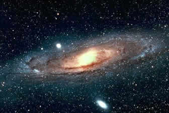
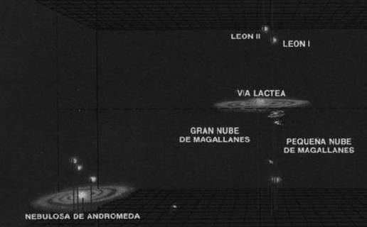
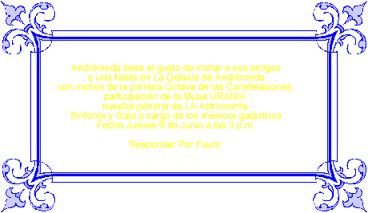
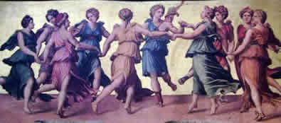

|
  |
  |
 |
La Fiesta de Andromeda |

La fiesta de Andrómeda, tenía sus antecedentes en una pregunta: ¿Qué hay más allá de la Vía Láctea? Durante bastantes años se pensó que no había nada, creían que nuestra Galaxia, la Vía Láctea, constituía todo el Universo existente.
En el Cielo se conocían varios objetos nebulosos, presentaban una curiosa forma espiral que estaba en la Constelación Andrómeda y desde el gran telescopio de Monte Palomar, pudieron comprobar que ese objeto nebuloso estaba formado por estrellas, era una Galaxia como la misma Vía Láctea, situada a unos 2 millones de años luz de distancia.

En la actualidad, se sabe que hay en el Universo observable. Alrededor de un BILLÓN de Galaxias. Cada una de las cuales formada por unos CIEN MIL MILLONES DE ESTRELLAS, parecidas a nuestra Vía Láctea.

Andrómeda estaba feliz, bailaba y cantaba en su escenario de losas de diamantes.
Ella joven y bella para siempre, era la triunfadora de las Constelaciones su A lo había conseguido, colocándola alfabéticamente como la primera en la lista de todas las Constelaciones. ¡Su Nombre tan fuera de lo común, nadie lo había copiado!
Por eso decidió hacer una GALA. La llamó “La Octava de las Constelaciones”, de la melodía de las 88 Notas Celestiales. El comienzo de una serie de notas musicales.
De la lista extrajo las 8 notas, se incluía ella misma, algunas del hemisferio norte, otras del hemisferio sur celeste. Andromeda Antlia Apus Aquarius Aquila Ara Aries Auriga

Y la gran sorpresa, llegaron a la gran Gala, Apolo con sus 9 Musas.
Y todos celebraron la idea, 8 eran las AES en la Constelaciones, con Apolo celebraban el 9 de JUNIO, de la Gala y las 9 Musas bailarían celebrando el acontecimiento, con la presencia de la bella madre Mnemosine, ayudando para la memoria de los visitantes actuales.
